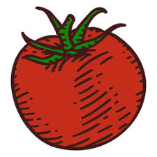

Kop van een artikel
Dit is een voorbeeldartikel.
| Element | Uitleg | Demonstratie |
|---|---|---|
| Les 1 - Inleiding HTML | ||
| <html> | Hiermee kun je een HTML document aanmaken | n.v.t. |
| <head> | Hier plaats je alle informatie over de pagina | n.v.t. |
| <body> | Hier plaats je de feitelijke content van de pagina | n.v.t. |
| <title> | Wordt gebruikt om je pagina een titel te geven (voor het tabblad) | (zie tabblad) |
| <p> | Hiermee kun je een paragraaf aanmaken. | Dit is een paragraaf. |
| <br> | Met het br element kun je een nieuwe regel beginnen. | Nieuwe regel beginnen. |
| <strong> | Hiermee kun je tekst als belangrijk markeren. Ook is het handig voor zoekmachines vanwege SEO waarde | Dit is belangrijke tekst |
| <em> | Hiermee kun je tekst als benadrukt markeren. | Dit is benadrukte tekst |
| Les 2 - Teksten | ||
| <meta> | Hier plaats je metagegevens (vooral voor SEO). | n.v.t. |
| <h1> t/m <h6> | Met deze elementen kun je headings (kopjes) maken. | Dit is een h3-heading |
| <del> | Met het <del> element kan je aangeven dat tekst is verwijderd. | Hoi, dit is |
| <ins> | Met het <ins> element kun je aangeven dat tekst is toegevoegd. | Dit is een toegevoegde tekst. |
| <sup> | Met het <sup> element kun je tekst omhoog plaatsen. | CO2 |
| <sub> | Met <sub> kun je bepaalde tekst omlaag plaatsen. | H2O |
| <q> | met het <q> element geef je een inline citaat aan. | Dit is een korte quote. |
| <blockquote> | Met het <blockquote> element geef je een langere quote aan. |
Dit is een quote van een bron. |
| <abbr> | Met het <abbr> element geef je een afkorting met uitleg weer. | De oprichters van Google |
| <ul> & <li> | Met het <ul> element kan je een unordered list maken hier moet ook altijd een <li> element in zitten. |
|
| <a> | met het <a> element kan je een website link op een pagina zetten. | Door hier op te klikken ga je naar Google |
| <base> | Met het <base> element kan je aangeven in welke map de index.html moet zijn. | <base href="../"> |
| <input type="text"> | Met dit element kan je schrijven in een input veld met het type text. | |
| <input type="email"> | Met dit element kan je de gebruiker een email laten schrijven. Hier is altijd een @ verplicht in dit element. | |
| <input type="number"> | Met dit element kan je een nummer intypen. het moeten altijd nummers zijn. | |
| <input type="date"> | Met dit element kan je een datum aanklikken of invullen. Het moet altijd een datum zijn. | |
| <input type="radio"> | Met dit element krijg je een bolletje. Hiermee kan je dit selecteren. Je kan ze niet meer ongedaan maken. | Blauw Rood Groen |
| <input type="password"> | Met dit element kan je de gebruiker een wachtwoord laten intypen. | |
| <input type="color"> | Met dit element kan je een gebruiker een kleur laten kiezen. | |
| <input type="checkbox"> | Met dit element kan je een gebruiker een checkbox laten aanvinken. Deze kan gedeselecteerd worden vergeleken met radio. | |
| <img> | Met dit element kan je een afbeelding laten zien. |  |
| <caption> | Met dit element kan je een tekst boven een table plaatsen. ( zie bovenaan de pagina). | |
| <video> | Met dit element kan je een video implementeren in de webpagina. | |
| <object> | Met dit element kan je een PDF bestand laten zien. | |
| <source > | Met dit element kan je een audio bestand laten zien. | |
| <textarea> | Met dit element kan een gebruiker een groter bericht versturen inplaats van met een input type text. | |
| <hr> | Met dit element kan een gebruiker een underline maken. | |
| <link rel="icon" href="img/favicon.ico" type="image/x-icon"> | Met het bovenstaande element geef je een kleine afbeelding in het tablad weer. | Zie tablad icon. |
| <article> | Met het <article> element geef je een zelfstandig artikel aan. |
Kop van een artikelDit is een voorbeeldartikel. |
| <figure> | Met dit element kan je een afbeelding of een ander media-element groeperen met een tekst erbij. |
|
| <details> | Met dit element kan je een samenvouwbaar tekstblok maken dat de gebruiker kan uitklappen. |
Google is een search engine! |
| <span> | Met dit element kan je een stukje tekst selecteren om er apart stijlen aan toe te voegen. | Dit is een blauw woord. |
| <select> | Met dit element kan je een dropdown maken waarin een gebruiker een keuze kan maken. | |
| <label> | Met het label element kun je informatie laten zien over het element. | Zie hierboven. |
| <section> | Met het <section> element kun je een sectie aangeven. Dit helpt structuur geven aan content. |
NieuwsDit is een sectie over het laatste nieuws. |